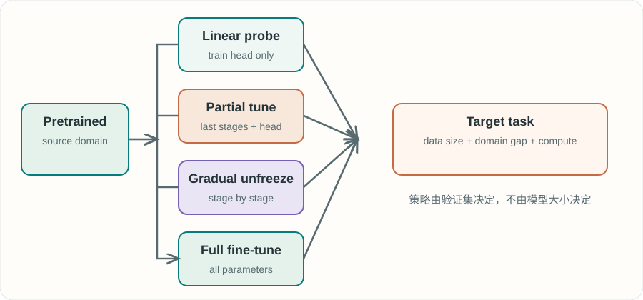
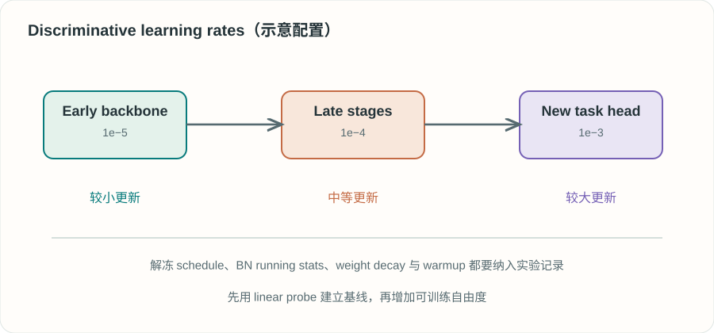
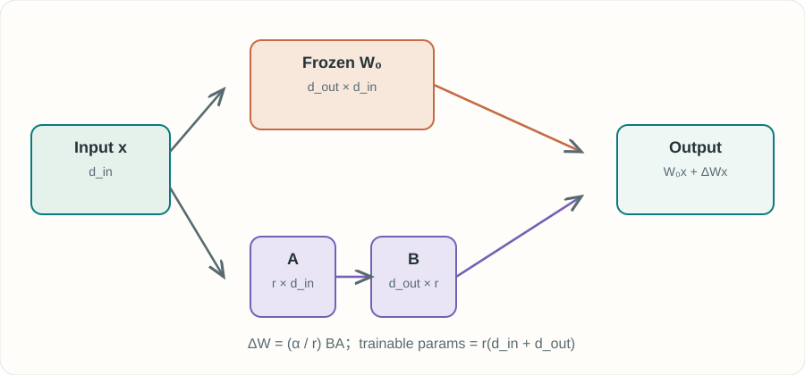
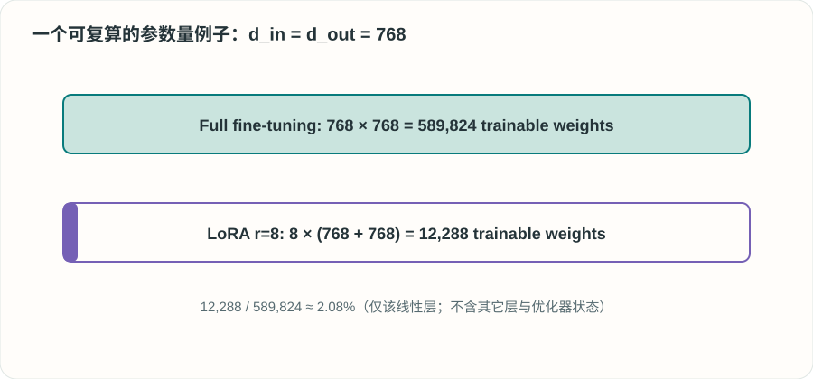

CHAPTER 24 · 迁移学习
迁移学习与 LoRA：让预训练表征适应新任务
预训练模型提供了可复用的视觉表征，但“加载权重”并不自动等于成功迁移。目标数据规模、领域差异、BatchNorm 状态、学习率和可训练参数范围都会改变结果。本章比较线性探测、冻结、渐进解冻与全量微调，并推导 LoRA 如何用低秩增量适配 Transformer 视觉骨干。
迁移学习：复用表征，不是复用标签
在 ImageNet 等大规模数据上预训练的 backbone 学到边缘、纹理、形状和更抽象的视觉模式。迁移学习把这些参数作为目标任务的初始化，或把 backbone 当作固定特征提取器。目标任务通常需要替换分类 head，因为预训练类别空间与新任务的标签集合不相同；即使两者类别数量相同，类别语义和编号也未必相同。
线性探测（linear probing）冻结 backbone，只训练一个线性 head，回答“现有特征是否已经线性可分”；全量微调允许所有层更新，适应能力更强但需要更多数据、显存和正则化。两者之间还有冻结大部分层、只微调最后 stage、逐步解冻等折中方案。

四种微调策略与差分学习率
- Linear probing：冻结 backbone，只训练新 head；适合快速评估预训练表征和低成本基线。
- Feature extractor：冻结大部分主干，训练 head 或少量末端模块；适合数据较少、目标域与预训练域相近的情况。
- Gradual unfreezing：先训练 head，再逐步解冻更早的 stage；降低一开始就大幅改变通用特征的风险。
- Full fine-tuning：全网更新；适合数据和计算预算更充足、域差异明显且验证协议可靠的场景。
差分学习率为不同模块设置不同的更新尺度：新 head 通常从较大学习率开始，预训练 backbone 使用更小学习率。下图只是一个可实验的数量级示例，不是任何架构的固定最佳配置。实际 schedule 还要与 warmup、weight decay、训练步数和 batch size 一起调节。

领域差异、预处理与数据划分
预训练权重绑定了输入约定：RGB/BGR 顺序、输入尺寸、crop 策略、像素范围、均值和标准差。Torchvision 的权重枚举通常提供与 checkpoint 匹配的 weights.transforms()，不要随意把旧版 pretrained=True 和新版本 weights API 混用。训练与推理预处理必须一致，且需要将预处理版本作为模型工件的一部分保存。
目标域差异可能来自传感器、照明、镜头、医学成像协议、卫星季节或工业产线。若域差异很小，线性探测可能足够；若低层纹理变化明显，可能需要解冻较早层或补充领域数据。验证集应按患者、设备、场景或采集时间分组，避免同一对象的近重复图像同时出现在训练和验证集合。
LoRA：冻结主权重，学习低秩增量
LoRA（Low-Rank Adaptation）最初论文研究的是大型 Transformer 语言模型：冻结预训练矩阵 W₀，只学习一个低秩更新矩阵。视觉 Transformer 的后续工作也将这一思想用于 attention 投影等线性层；因此本节把 LoRA 作为 ViT 的参数高效适配方式讲解，但不把 2021 年原论文说成最初的视觉 LoRA 研究。
若 W₀ ∈ R^(d_out×d_in)，则 A ∈ R^(r×d_in)，B ∈ R^(d_out×r)，r 远小于两侧维度。
前向计算为 W₀x + (α/r)B(Ax)。主权重 W₀ 冻结，训练参数只包括 A 和 B。常见初始化让 A 使用小随机值、B 初始化为零，因此初始增量为零，模型起点与原始预训练层一致。推理时，在支持的实现中可以把 BA 合并回 W₀，避免额外的 adapter 分支延迟。

参数预算：rank 如何改变成本
完整微调一个 d_out×d_in 线性层，需要更新 d_out·d_in 个参数；LoRA 只训练 r(d_in+d_out) 个参数。两者参数比例为 r(1/d_out+1/d_in)。当输入输出维度都为 768、rank=8 时，完整矩阵有 589,824 个参数，而 LoRA 有 12,288 个参数，约占 2.08%。这只是一个线性层的算术例子，不包括 backbone 其他层、优化器状态、梯度缓存或模型本身的存储。

rank 越大，适配空间通常越宽，但可训练参数和优化器状态也增加。选择哪些层插入 LoRA（例如 attention 的 Q/V 投影、QKV 全投影或 MLP）同样重要。不要只报告 rank；还应记录 target modules、alpha、dropout、bias 策略和训练参数总数。
工程陷阱：BatchNorm、head 与 checkpoint
- 冻结参数不冻结运行统计：
requires_grad=False不会自动阻止 BatchNorm 在train()下更新 running mean/variance。若想固定统计量，需要明确控制模块模式。 - 替换 head 后检查 optimizer：新 head 的参数必须加入 optimizer；旧 head 参数不应残留在参数组中。
- 不要在目标验证集上反复选 checkpoint：模型选择应与最终测试集隔离，数据量小可用分组交叉验证。
- 保存完整适配配置：除了 adapter 权重，还需保存 base model ID/version、预处理、label mapping、LoRA target modules 与 rank。
- 参数高效不代表数据高效：LoRA 降低可训练参数量，却不能替代代表性样本、正确标签和领域验证。
可运行实验：冻结层与 LoRA Linear
第一段检查冻结 backbone 时 optimizer 只持有 head 参数，并展示逐步解冻；第二段实现一个最小 LoRA 线性层，验证 B=0 初始化时输出与 base layer 一致，并检查训练参数量公式。
import torch
from torch import nn
backbone = nn.Sequential(nn.Linear(4, 8), nn.ReLU(), nn.Linear(8, 8))
head = nn.Linear(8, 3)
for parameter in backbone.parameters():
parameter.requires_grad = False
optimizer = torch.optim.SGD(head.parameters(), lr=1e-2)
trainable = [p for p in list(backbone.parameters()) + list(head.parameters()) if p.requires_grad]
assert len(trainable) == len(list(head.parameters()))
assert all(p.requires_grad for group in optimizer.param_groups for p in group["params"])
# Gradually unfreeze the last backbone layer.
for parameter in backbone[-1].parameters():
parameter.requires_grad = True
assert any(p.requires_grad for p in backbone[-1].parameters())
print("frozen backbone / head-only optimizer verified")import torch
from torch import nn
import torch.nn.functional as F
class LoRALinear(nn.Module):
def __init__(self, in_dim, out_dim, rank=4, alpha=8.0):
super().__init__()
self.base = nn.Linear(in_dim, out_dim, bias=False)
for p in self.base.parameters():
p.requires_grad = False
self.A = nn.Parameter(torch.randn(rank, in_dim) * 0.02)
self.B = nn.Parameter(torch.zeros(out_dim, rank))
self.scale = alpha / rank
def forward(self, x):
update = F.linear(F.linear(x, self.A), self.B) * self.scale
return self.base(x) + update
layer = LoRALinear(16, 12, rank=3, alpha=6.0)
x = torch.randn(5, 16)
base_output = layer.base(x)
adapted_output = layer(x)
trainable_count = layer.A.numel() + layer.B.numel()
assert torch.allclose(base_output, adapted_output)
assert trainable_count == 3 * (16 + 12)
assert all(not p.requires_grad for p in layer.base.parameters())
assert all(p.requires_grad for p in (layer.A, layer.B))
print("LoRA trainable parameters:", trainable_count)